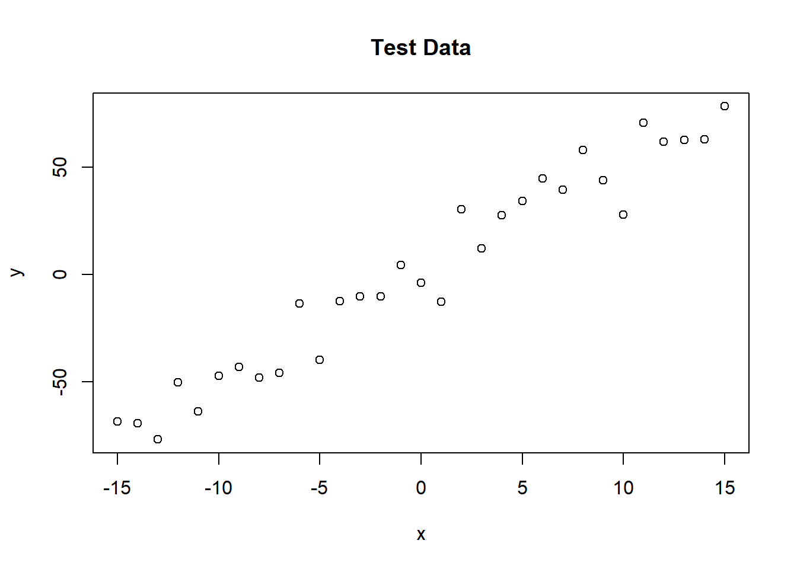
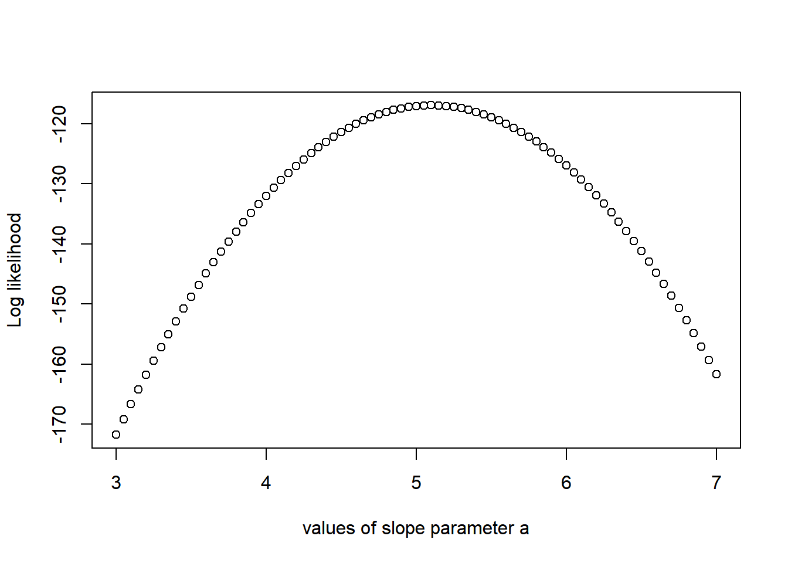
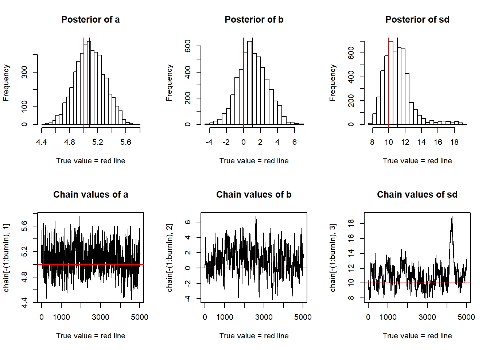

Its an educational example of the Bayesian equivalent of a linear regression, sampled by an MCMC with Metropolis-Hastings steps
Creating test data
> trueA <- 5
> trueB <- 0
> trueSd <- 10
> sampleSize <- 31
>
> # create independent x-values
> x <- (-(sampleSize-1)/2):((sampleSize-1)/2)
> # create dependent values according to ax + b + N(0,sd)
> y <- trueA * x + trueB + rnorm(n=sampleSize,mean=0,sd=trueSd)
>
> plot(x,y, main="Test Data")
> likelihood = function(param) {
+ a = param[1]
+ b = param[2]
+ sd= param[3]
+
+ pred = a*x + b
+ singlelikelihoods = dnorm(y, mean=pred, sd=sd, log=T)
+ sumll = sum(singlelikelihoods) #log likelihood
+ return(sumll)
+ }
>
> slopevalues = function(x) {
+ return(likelihood(c(x, trueB, trueSd)))
+ }
>
> slopelikelihoods = lapply(seq(3,7, by=.05), slopevalues)
>
> plot(seq(3,7, by=0.05), slopelikelihoods, type="p", xlab="values of slope parameter a", ylab="Log likelihood")
> #prior distribution
> prior = function(param) {
+ a = param[1]
+ b = param[2]
+ sd= param[3]
+ aprior = dunif(a, min=0, max=10, log=T)
+ bprior = dnorm(b, sd = 5, log=T)
+ sdprior=dunif(sd, min=0, max=30, log=T)
+ return(aprior+bprior+sdprior)
+ }
>
> #posterior distribution MCMC will be working on
> posterior = function(param) {
+ return(likelihood(param) + prior(param))
+ }
>
> #Metropolis algorithm
> proposalfunction = function(param) {
+ return(rnorm(3, mean=param, sd=c(0.1, 0.5, 0.3)))
+ }
>
> run_metropolis_MCMC = function(startvalue, iterations) {
+ chain = array( dim = c(iterations+1,3) )
+ chain[1, ] = startvalue
+ for ( i in 1 : iterations ) {
+ proposal = proposalfunction(chain[i, ])
+ probab = exp(posterior(proposal) - posterior(chain[i, ]) )
+ if ( runif(1) < probab ) {
+ chain[i+1, ] = proposal
+ }
+ else {
+ chain[i+1, ] = chain[i, ]
+ }
+ }
+ return(chain)
+ }
>
> startvalue = c(4,0,10)
> chain = run_metropolis_MCMC(startvalue, 10000)
>
> burnIn = 5000
>
> acceptance = 1 - mean(duplicated(chain[-(1:burnIn), ] ) )
>
> #Summary
> par(mfrow = c(2,3))
> hist(chain[ -(1:burnIn), 1], nclass=30, main="Posterior of a", xlab="True value = red line")
> abline(v=mean(chain[-(1:burnIn), 1]))
> abline(v=trueA, col="red")
>
> hist(chain[-(1:burnIn),2], nclass=30, main="Posterior of b", xlab="True value = red line")
> abline(v=mean(chain[-(1:burnIn),2]))
> abline(v=trueB, col="red")
>
> hist(chain[-(1:burnIn),3], nclass=30, main="Posterior of sd", xlab="True value = red line")
> abline(v=mean(chain[-(1:burnIn),3]))
> abline(v=trueSd, col="red")
>
> plot(chain[-(1:burnIn),1], type="l", xlab="True value = red line", main="Chain values of a")
> abline(h=trueA, col="red")
>
> plot(chain[-(1:burnIn),2], type="l", xlab="True value = red line", main="Chain values of b")
> abline(h=trueB, col="red")
>
> plot(chain[-(1:burnIn),3], type="l", xlab="True value = red line", main="Chain values of sd")
> abline(h=trueSd, col="red")
##for comparison
>
> summary(lm(y~x))
##
## Call:
## lm(formula = y ~ x)
##
## Residuals:
## Min 1Q Median 3Q Max
## -24.5869 -6.8913 0.8649 6.9962 18.7301
##
## Coefficients:
## Estimate Std. Error t value Pr(>|t|)
## (Intercept) 1.4065 1.9326 0.728 0.473
## x 5.1018 0.2161 23.612 <2e-16 ***
## ---
## Signif. codes: 0 '***' 0.001 '**' 0.01 '*' 0.05 '.' 0.1 ' ' 1
##
## Residual standard error: 10.76 on 29 degrees of freedom
## Multiple R-squared: 0.9506, Adjusted R-squared: 0.9489
## F-statistic: 557.5 on 1 and 29 DF, p-value: < 2.2e-16